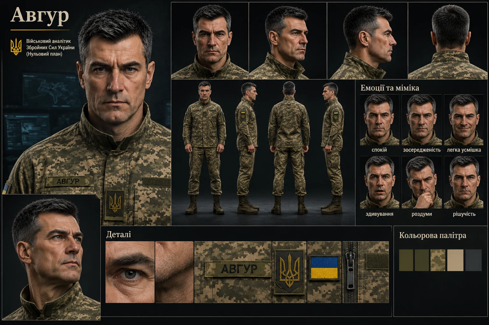

ОСНОВНА ІНФОРМАЦІЯ
Аналітик розвідувальної мережі
Авгур працює як військовий аналітик Збройних Сил України на Нульовому плані. Він керує створенням розвідувальної мережі, що об’єднує дані орбітальних модулів, наземних спостерігачів та аналітичних груп.
РОЗВІДУВАЛЬНА МЕРЕЖА
Від спостереження до перевірених даних
Мережа під його керівництвом охоплює важливі райони Північної держави, накопичує базу перевірених об’єктів, виявляє аномалії та постійно оновлює інформацію.
РОЛЬ У ВІЙСЬКОВІЙ РОБОТІ
Пошук і підтвердження цілей
Авгур організовує роботу так, щоб система не лише фіксувала підозрілі об’єкти, а й допомагала спрямовувати розвідників для їхньої безпосередньої перевірки.